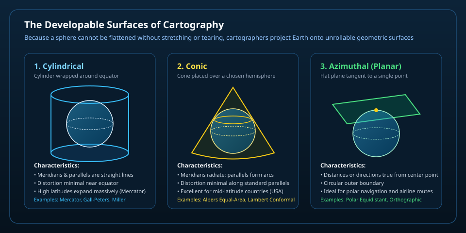
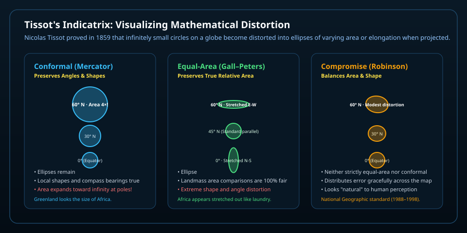

Earth is a three-dimensional oblate spheroid. In 1828, mathematician Carl Friedrich Gauss proved in his Theorema Egregium that a sphere's surface cannot be flattened onto a two-dimensional sheet without altering distances, angles, or surface areas. Every flat map is therefore a purposeful compromise.
Interactive map laboratory
One world, several honest views
Choose a projection below. Notice how the exact same continental landmass polygons are geometrically transformed according to different mathematical formulas.
continentsoceansgraticule: latitude and longitude
Globe reference
The globe shows one hemisphere at a time. Its orthographic screen view compresses features near the edge; turn it to see the far side.
Best overall reference
The Geometry of Projection: Developable Surfaces
A sphere cannot be unrolled flat without stretching. To mathematically transfer points from Earth's curved surface to flat paper, cartographers use three primary developable surfaces—shapes that can be sliced open and flattened into a plane without distortion.

Figure 1 · The Three Primary Developable Surfaces — A cylinder wrapped around Earth creates rectangular maps with perpendicular graticules (great for equatorial navigation); a cone placed over a hemisphere creates fan-shaped maps with curved parallels (ideal for mid-latitude continents); and a tangent flat plane creates circular azimuthal maps (essential for polar and airline routes).
Cylindrical Projections
Earth is mathematically projected onto an encompassing cylinder. In conformal cylindrical projections like Mercator, parallels of latitude spread further apart near the poles. As a result, landmasses near the poles swell exponentially: Greenland appears comparable in size to the entire African continent, even though Africa is actually 14 times larger.
Conic Projections
Earth is projected onto a cone tangent or secant to chosen standard parallels. Distortion is virtually zero along those standard lines (such as 30°N and 60°N). Because distortion increases rapidly to the north and south, conic projections are rarely used for the whole world, but excel for wide regional territories like North America.
Azimuthal Projections
Earth is projected directly onto a flat plane touching a single point (such as the North Pole or an airport hub). Directions and great-circle distances radiating from that center are perfectly accurate. The outermost rim represents the opposite pole, causing extreme peripheral elongation.
Tissot's Indicatrix: Measuring the Distortion
In 1859, French mathematician Nicolas Auguste Tissot devised an ingenious visual metric: imagine drawing identical tiny circles across Earth's surface at every 30° of latitude. On a flat map, those circles deform into ellipses (Tissot's indicatrices). By examining whether the circles change size, shape, or both, we can evaluate any projection's honesty.

Figure 2 · Tissot's Indicatrix in Action — On conformal maps, indicatrices remain perfect circles (preserving local angles) but swell enormously in surface area toward the poles. On equal-area maps, every ellipse encloses the exact same surface area, but they stretch into skinny ovals near high latitudes. On compromise maps, cartographers balance mild shape distortion with mild area change.
Prediction Check: Landmass Scale
Before checking the mathematical area: on a standard school wall map (often Mercator or Miller cylindrical), Greenland and Africa look roughly similar in size. In real physical surface area, how do they actually compare?
Concept Mastery
Check Your Cartographic Understanding
Land and islands: Natural Earth v5.1.2, 1:50 million, public domain; checked October 12, 2026. Geography is generalized for this scale, not survey precision or live boundary monitoring. Optional borders follow the dataset’s de facto policy; dashed red lines indicate disputed or claim boundaries, not an endorsement of sovereignty. Continents are a geographic convention: Europe and Asia are physically one continuous landmass (Eurasia). Projection principles follow standard International Cartographic Association definitions.